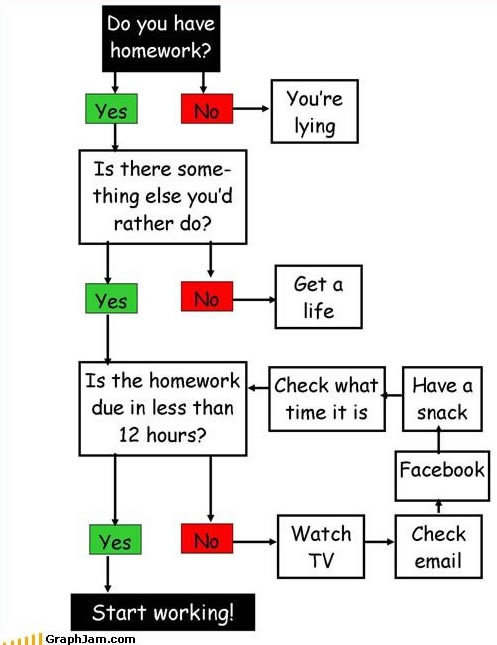

Chapter 8 Control Structures (1)
So far we have only written very simple functions and scripts which always did the very same. To make the code more dynamic we need so called control statements. The following ones exist in R and we will learn how they work over the next few sessions.
ifand : test a condition and act on itfor: loop over a fixed number of itemswhile: execute loopwhilea condition isTRUErepeat: an infinite loop (untilbreakstops it)break: stop/break execution of a loopnext: skip iteration, continue loopreturn: exit a function (returns result)
The following comic can be seen as a function with a set of control statements.
- the whole flowchart can be seen as a function
start_homework - there are a set of
if-elseconditions (if something isYesdo this, else to that) - the loop in the bottom right corner is a
whileloop. While (or “as long as”) more than12hours left until submission: procrastinate.
8.1 Logical Operators
Logical operators are an essential part of control structures. Check “Session 02, Exercise B” and read the R documentation ?Logical and ?Comparison (help pages) for more details.
8.2 If conditions
The most basic control structure is the single if condition.
Basic usage:
- Structure:
if (<condition>) { <action> } - The condition has to be a single logical value (
TRUEorFALSE). - The action between the curly brackets is executed if and only if the condition is
TRUE.
An example:
# Define x
x <- 8
# Check if x > 10
if (x > 10) { print("x is larger than 10") }
if (x > 10) print("x is larger than 10")There are different ways how to write if conditions. According to Headley Wickhams style guide the following two ways are the preferred ones:
Short:
if (x > 10) print("x is larger than 10")For longer <action>s on multiple lines:
if (x > 10) {
print("x is larger than 10")
}That’s nice, but where can we use it?
8.2.1 Conditional return
Session 03, Exercise B: pool price.
calculate_costs <- function(width, height, depth, price) {
# If input price is smaller or equal to 0 return NA
if (price <= 0) return(NA)
# Else do something
res <- width * height * depth * price
return(res)
}8.2.2 Stop execution
We can now use conditions to stop our script conditional on e.g., our input arguments using stop("..."). Don’t mix stop with quit(...)! quit will quit RStudio (or R in general), stop stops the execution of a script. In this example the execution will be stopped if the inputs are not numeric (x and/or y).
powfun <- function(x, y) {
# Check if x, y are numeric
if (!is.numeric(x)) stop("input x has to be numeric")
if (!is.numeric(y)) stop("input y has to be numeric")
# Return the result
return(x^y)
}We can, of course, add a set of different checks, e.g., check that both inputs are numeric and of length 1:
powfun <- function(x, y) {
# Check if x, y are numeric
if (!is.numeric(x)) stop("input x has to be numeric")
if (!is.numeric(y)) stop("input y has to be numeric")
# Both have to be of length one
if (length(x) != 1) stop("input x has to be of length 1")
if (length(y) != 1) stop("input y has to be of length 1")
# Return the result
return(x^y)
}This is the very same (again, check that x and y are numeric of length 1) but using logical or (|):
powfun <- function(x, y) {
# Check if x, y are numeric
if (!is.numeric(x) | !is.numeric(y)) {
stop("input x, y have to be numeric")
}
# Both have to be of length one
if (length(x) != 1 | length(y) != 1) {
stop("input x, y have to be of length 1")
}
# Return the result
return(x^y)
}Or using only one condition. Note: compare this version to the one two further up. While they do the same this one is much more compact, however, the error message you will get is much less detailed. Thus, if you get an error here (stop(...) is called) it is not obvious what happened exactly. Thus, it strongly depends on your task whether you want to have compact conditions or detailed messages.
powfun <- function(x, y) {
# Check if x, y are numeric and of length 1
if (!is.numeric(x) | !is.numeric(y) | length(x) != 1 | !length(y) == 1) {
stop("input x, y have to be numeric of length 1")
}
# Return the result
return(x^y)
}8.2.3 Another example
Another example from Session 03, Exercise A:
celsius_to_fahrenheit <- function(x) {
if (!is.numeric(x)) stop("x must be numeric")
return(x * 9 / 5 + 32)
}
fahrenheit_to_celsius <- function(x) {
if (!is.numeric(x)) stop("x must be numeric")
return((x - 32) * 5 / 9)
}We cannot only check input arguments using control statements, we can also use them to check results and other things. Remember: in Session 02, Exercise A one of the tasks was to convert temperatures from degrees Celsius to degrees Fahrenheit and back and check if the temperatures are the same at the end. If not, you have a problem with your functions.
Let’s start with a numeric vector temp_celsius and convert the temperatures into degrees Fahrenheit and back. The resulting vector is temp_celsius2.
# Convert temperatures
temp_celsius <- c(0.3, -5.2, 38.3, NA, 34.1)
temp_fahrenheit <- celsius_to_fahrenheit(temp_celsius)
temp_celsius2 <- fahrenheit_to_celsius(temp_fahrenheit)We could now use an if condition in our script to compare these two vectors and stop if they are not equal before using them to calculate something else.
# Stop if not equal
if (!all.equal(temp_celsius, temp_celsius2)) {
stop("Whoops, something is wrong with the conversion")
}8.3 If else conditions
The next extension of simple if statements are the if-else statements.
- Structure:
if (<condition>) \{ <action 1> \} else \{ <action 2> \} - Additional
elsecode block (optional) - If the condition is
TRUE“<action 1>” is executed, else “<action 2>”.
A simple example:
# Create object x
x <- 22
# Is a larger than 10?
if (x > 10) { print("x is > 10") } else { print("x is <= 10") }## [1] "x is > 10"Again, R allows you to write if-else conditions differently. According to the style guide the following to ways are good:
One-liner:
if (x > 10) { print("x is larger than 10") } else { print("x is smaller or equal to 10") }Over multiple lines:
if (x > 10) {
print("x is larger than 10")
} else {
print("x is smaller or equal to 10")
}8.3.1 Multiple conditions
We can also combine multiple if-else conditions and next them. In this example the else action contains another if-else control statement.
x <- 10
# First if-else statement
if (x < 10) {
x <- x^2
} else {
# Second if-else statement (nested)
if (x > 10) {
print("The result is larger than 10!")
} else {
print("Exactly 10!")
}
}In this example "Exactly 10!" will be printed. The outer condition (x < 10) is FALSE why “else” will be executed. In else we see a second if-else block. The condition of this inner if-else statement is also FALSE (x > 0) wherefore “else” of the inner control statement will be executed. ### if, else if, else
The next and last extension are additional else if conditions. They are executed sequentially!
- If the first condition (
if) isFALSEcheck the next condition - Check first
else ifcondition. IfTRUEexecute, else check the next one (in this case it’selse). - Note that only one will be used!
x <- 4
# One if, else if, else condition
if (x < 10) {
x <- x^2
} else if (x > 10) {
print("The result is larger than 10!")
} else {
print("Exactly 10!")
}In this example nothing will be printed. The first condition (x < 10) is TRUE and the first action will be executed. All done there is to take x to the power of 2 (x <- x^2). This will change our x and x will be 16 at the end (4^2) but we will not run into else if as the first if was TRUE and only one will be executed! We can use multiple else if conditions. Again: only one will be executed, the first one that is TRUE (or run into the else if none of them is TRUE. All others will be skipped.
Another example: what will be printed, if anything?
x <- 4
# First condition
if (x < 10) {
x <- x^2
}
# Second condition
if (x > 10) {
print("The result is larger than 10!")
} else {
print("Exactly 10!")
}In contrast to the one example two further up we are not using an if, else if, else here, but an if, and a second if-else! Thus, something different happens. These are two separate control structures and the will be executed one after another.
x < 10is true, so the action of the upperifstatement will be executed. The action isx <- x^2which will overwrite our objectxand store16onx.- Now the second
if-elsestatement is considered. As we have modified ourxthe conditionx > 10isTRUEand"The result is larger than 10!"will be printed.